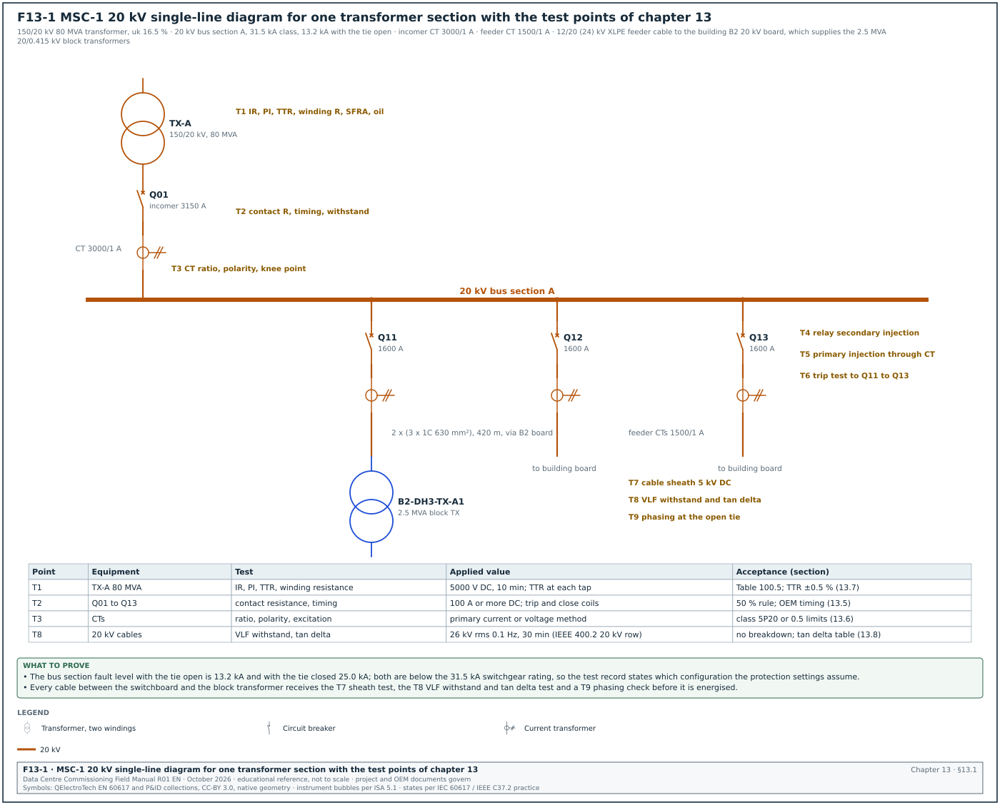
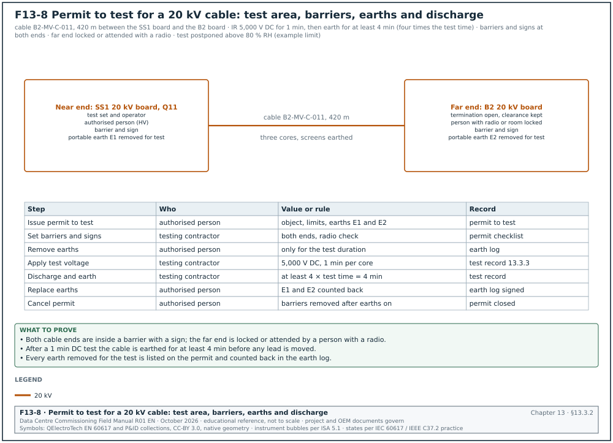
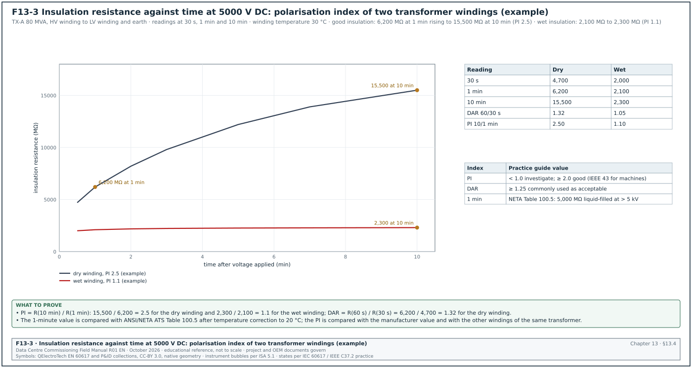
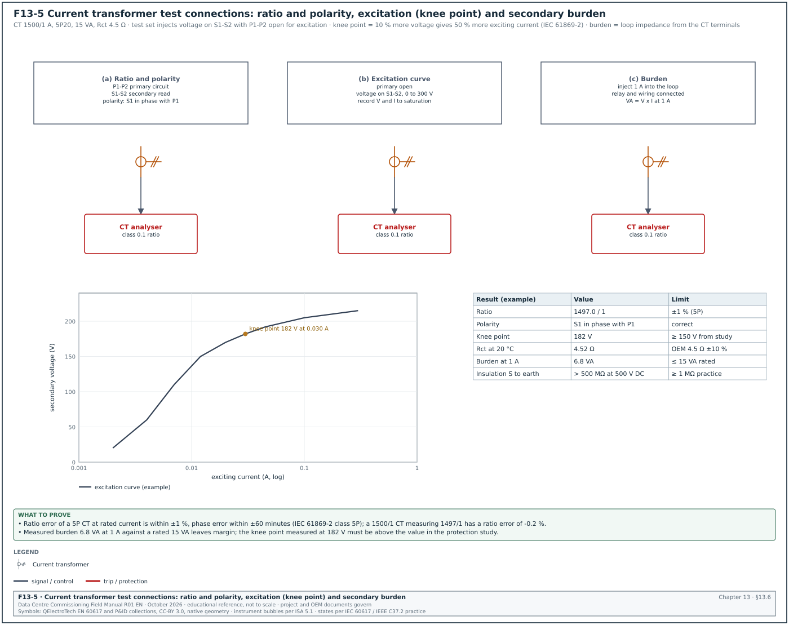
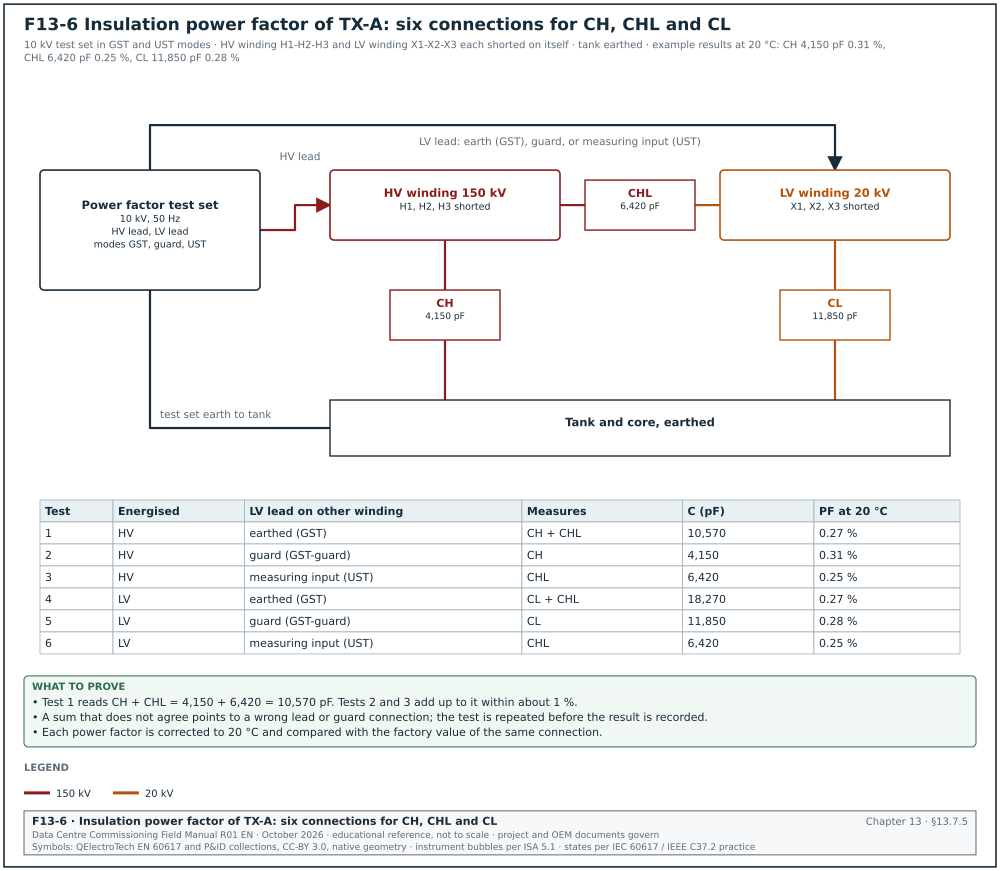
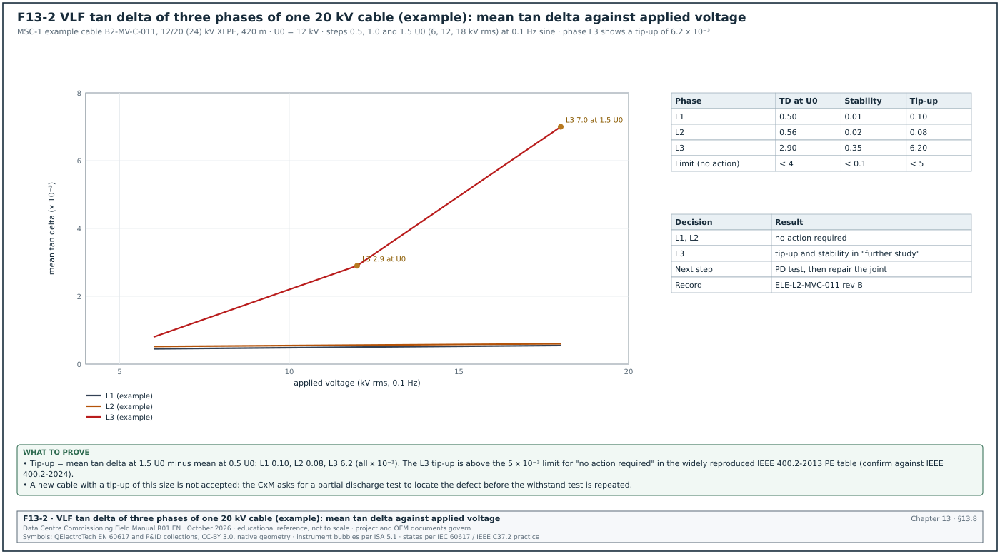
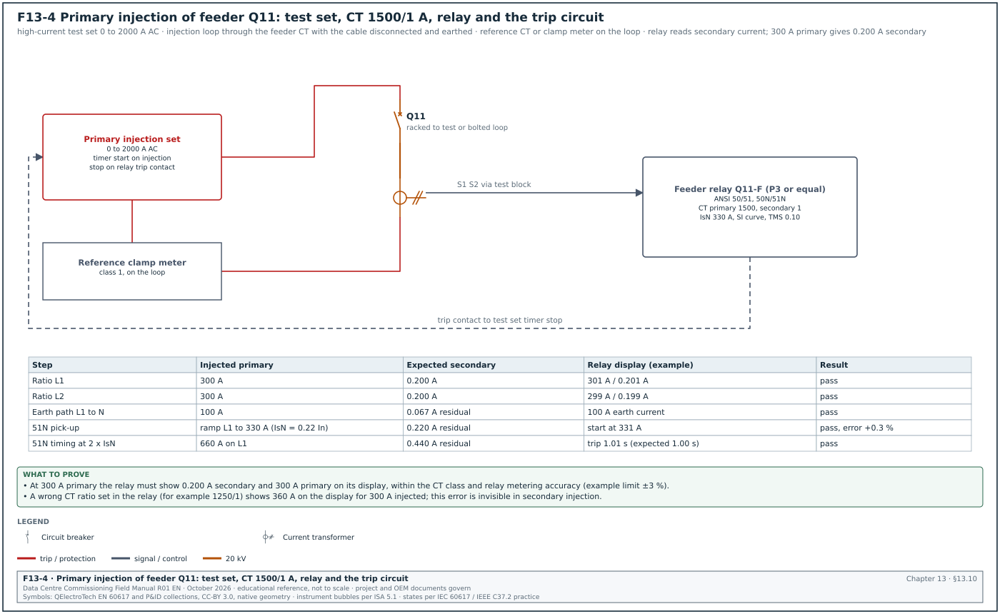
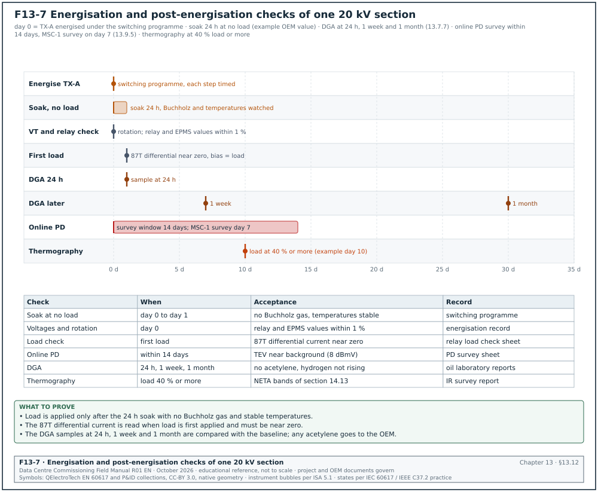

13.0Scope of this chapter
This chapter covers the site acceptance tests of the medium-voltage (MV) system of a data-centre campus. The equipment is the 20 kV switchgear, the 150/20 kV and 20/0.415 kV transformers, the 20 kV cables, the instrument transformers and the protection relays. For every test the chapter gives the instrument, the connection, the applied value, the duration, and the acceptance value with its source. It also gives the fields of the test record and the errors found most often before a witness test.
- The MV system and the test boundary. The MSC-1 20 kV single-line diagram, the test points and who tests what.
- Test programme and hold points. The order of tests, the roles, the time limits and what blocks energisation.
- Instruments and safety. Calibration, accuracy, earthing of test objects and the permit to test.
- Insulation resistance. Test voltages, minimum values from the ANSI/NETA Acceptance Testing Specifications (ATS), temperature correction, polarisation index (PI) and dielectric absorption ratio (DAR).
- Switchgear tests. Contact resistance, timing, vacuum interrupter integrity, sulphur hexafluoride (SF6) gas checks, interlocks and the power-frequency withstand test.
- Instrument transformers. Current transformer (CT) and voltage transformer (VT) ratio, polarity, excitation, burden and insulation.
- Power transformers. Turns ratio (TTR), winding resistance, excitation current, power factor, sweep frequency response analysis (SFRA), oil tests and dry-type checks.
- MV cables. Sheath test, very low frequency (VLF) withstand, tan δ (dissipation factor) and the decision rules.
- Partial discharge. Offline measurement to IEC 60270, online measurement and calibration.
- Protection. Relay secondary injection, primary injection, trip tests and setting control.
- Pre-energisation checks. Earthing, phasing, interlocks and the energisation record.
- Records and errors. Data fields of every record, filled examples and common errors.
Documents and standards used: ANSI/NETA ATS-2025 (Standard for Acceptance Testing Specifications for Electrical Power Equipment and Systems), IEEE 400-2023 and IEEE 400.2-2024 (field testing of shielded power cable systems, VLF), IEEE 400.3 (partial discharge testing of cable systems in the field) and IEC 60270:2025 (partial discharge measurements). The chapter also uses IEC 62271-1 and IEC 62271-200:2021 (MV switchgear), IEC 62271-100 (circuit breakers), IEC 60076-1 and IEC 60076-18 (power transformers and frequency response), IEEE C57.152-2025 (diagnostic field testing of liquid-filled transformers) and IEEE C57.106 (acceptance and maintenance of insulating mineral oil). It also uses IEC 60422 Ed. 5.0 (2024) (mineral oil supervision), IEC 61869-2 and -3 (CTs and VTs), IEC 60255-151 (overcurrent relay curves), IEEE 43 (insulation resistance of rotating machines, used here only for PI guidance), IEC 60502-2 (MV extruded cables) and the MSC-1 example-campus numbers. Where a value could not be checked against the current edition, the text marks it for confirmation and names the document and the table or clause that holds the value.
13.1The MV system on MSC-1 and the test boundary


13.1.1What the MV system is and why it is tested on site
The MV system takes power from the 150 kV utility connection and distributes it at 20 kV to the buildings. In each building, block transformers reduce it to 415 V for the uninterruptible power supply (UPS) and mechanical loads. On a data-centre campus a few MV circuits carry many megawatts of information technology (IT) load, so a failed cable joint or a wrong relay setting can trip a whole building. Factory tests prove the design and the manufacture of each item. Site tests prove that the items survived transport and installation, that they are connected correctly and that the protection operates as the study requires.
Figure F13-1 shows one transformer section of the MSC-1 20 kV system with the test points used in this chapter.
| MSC-1 quantity | Value | Use in this chapter |
|---|---|---|
| Main transformers | 4 × 80 MVA, 150/20 kV, impedance uk 16.5 % | turns ratio (TTR), winding resistance, oil tests, SFRA |
| Current per transformer at 20 kV, normal | 1,334.6 A | CT ratio choice, primary injection current |
| Current per transformer, one path lost | 2,193.9 A | incomer rating check, thermal test load |
| 20 kV section fault level, tie open | 13.2 kA | relay settings, partial discharge (PD) and withstand safety distances |
| 20 kV fault level, tie closed | 25.0 kA | switchgear rating check |
| Switchgear short-circuit class | 31.5 kA | nameplate check at receipt |
| Building feeders | 2 per building, 1,334.6 A each | feeder breaker and cable tests |
| Block transformers | 2.5 MVA, 20/0.415 kV, low-voltage (LV) current 3,478 A | TTR, winding resistance, dry-type checks |
| 150 kV fault level | 31.5 kA | 150 kV side tests, power quality chapter 17 |
13.1.2Test points and responsibilities
| Point | Equipment | Tests | Performed by | Witnessed by |
|---|---|---|---|---|
| T1 | 80 MVA transformer TX-A | insulation resistance (IR), PI, TTR, winding resistance, excitation current, power factor, SFRA, oil | transformer original equipment manufacturer (OEM) or testing contractor | commissioning authority (CxA), owner's electrical engineer |
| T2 | 20 kV breakers Q01 to Q13 | contact resistance, timing, vacuum integrity, mechanical operation, interlocks | switchgear OEM | CxA |
| T3 | CTs and VTs | ratio, polarity, excitation, burden, insulation | testing contractor | CxA |
| T4 | Protection relays | secondary injection of every enabled element | protection testing contractor | CxA, protection engineer |
| T5 | CT to relay chain | primary injection | testing contractor | CxA |
| T6 | Trip circuits | trip from relay to breaker, lockout relay 86 | testing contractor | CxA |
| T7 | 20 kV cables | outer sheath test | cable installer | CxA |
| T8 | 20 kV cables | VLF withstand with tan δ, or monitored withstand | testing contractor | CxA, cable supplier |
| T9 | Open tie or feeder end | phasing and phase rotation | testing contractor | CxA, operations |
13.1.3Commissioning levels for MV equipment
This chapter uses the level definitions of section 02.3.2 (L0 to L6). The MV tests in this chapter sit at Level 1 (factory acceptance test) and Level 2 (site installation and pre-energisation tests), with energisation and start-up at Level 3 and functional checks at Level 4.
- Level 0, design and submittal review. The CxA checks the approved data sheets, the routine test certificates format and the inspection and test plan (ITP) before manufacture. The output is the approved ITP with hold and witness points.
- Level 1, factory acceptance test. The CxA witnesses routine tests at the factory: power-frequency withstand, partial discharge on transformers, ratio and losses. The output is the signed factory acceptance test (FAT) report.
- Level 2, installation and pre-energisation tests. Every test in sections 13.4 to 13.11 is done after installation and before energisation. The output is one signed Level 2 test record per device, for example ELE-L2-MVSG-Q11.
- Level 3, energisation and start-up. The equipment is energised under a switching programme, phasing is confirmed, and metering and alarms are checked live. The output is the energisation record and the Level 3 start-up checklist.
- Level 4 and Level 5, functional and integrated tests. The MV system takes part in the functional transfer tests at Level 4 and in the loss-of-utility and transfer scenarios of the integrated systems test at Level 5 (chapter 28).
13.2Test programme, roles, sequence and hold points
13.2.1Roles
| Role | Responsibility in MV testing |
|---|---|
| Commissioning manager (CxM) | owns the programme, sets the sequence, chairs the energisation readiness review, signs the Level 2 summary |
| Commissioning authority (CxA) | witnesses tests, checks results against acceptance values, raises issues |
| Testing contractor (NETA certified technicians or equal) | performs the tests, owns the instruments and calibration certificates, writes the reports |
| Equipment OEM | performs OEM-specific tests (breaker timing, transformer SFRA baseline), confirms warranty conditions |
| Protection engineer | issues the protection study and setting files, approves deviations |
| Authorised person (high voltage) | issues permits to work and permits to test, applies and removes earths |
| Owner's operations representative | receives the energised equipment and the records |
13.2.2Sequence for one 20 kV switchboard section
The sequence below is for one bus section with its incomer transformer and feeders. Times are working days after the trigger.
- Installation inspection. The installer completes the Level 2 installation checklist: anchoring, busbar joints torqued and marked, earthing connected, cable terminations made to the OEM instruction. Time limit: 2 days after mechanical completion.
- Insulation resistance of busbars and breakers. The testing contractor tests each phase to earth and between phases at 5,000 V DC for 1 minute. Time limit: 1 day. A failed value blocks the withstand test.
- Contact resistance and timing. The OEM tests each breaker. Time limit: 2 days for a section of 10 panels.
- Instrument transformer tests. Ratio, polarity, excitation and burden for each CT and VT. Time limit: 2 days.
- Power-frequency withstand of the switchgear. Applied only after steps 2 to 4 pass, with VTs and surge arresters disconnected. Time limit: 1 day.
- Relay secondary injection. Each enabled protection element against the approved setting file. Time limit: 0.5 day per relay.
- Primary injection. CT to relay chain for every protection CT. Time limit: 2 days per section.
- Trip tests. Each relay trips its breaker through the real trip circuit. Time limit: 1 day.
- Cable tests. Sheath test, VLF withstand with tan δ on each feeder cable after terminations are complete. Time limit: 1 day per 3 cables.
- Transformer tests. Section 13.7 tests on the incomer transformer, oil results received from the laboratory. Time limit: 5 days including laboratory time.
- Pre-energisation review. The CxM reviews all records with the CxA and the authorised person. Time limit: 1 day. The energisation readiness certificate is signed only when every Level 2 record is complete and every open issue is category C or lower.
- Energisation and phasing. Under the switching programme of chapter 10. Phasing at the open tie (T9) before the tie is ever closed.
13.2.3What blocks energisation
| Condition | Effect | Who clears it |
|---|---|---|
| Any IR value below the acceptance value | blocks withstand and energisation | testing contractor retests after cause found; CxA accepts |
| Withstand test breakdown or flashover | blocks energisation of that circuit | OEM repairs, full retest of that circuit |
| VLF tan δ in "action required" or tip-up above limit on a new cable | blocks energisation of that cable | installer locates and repairs, retest |
| Relay setting file revision different from the approved study | blocks energisation of that circuit | protection engineer issues corrected file |
| Trip test not done on any breaker | blocks energisation of that breaker | testing contractor |
| Oil breakdown voltage (BDV) or moisture outside limits | blocks energisation of the transformer | transformer OEM processes oil, resamples |
| Missing calibration certificate for an instrument used | result not accepted | testing contractor repeats with calibrated instrument |
13.3Instruments, calibration and safety for MV testing
13.3.1Instruments and accuracy
| Test | Instrument | Typical range | Accuracy or class (check the data sheet) | Calibration |
|---|---|---|---|---|
| Insulation resistance | insulation tester 5 kV or 10 kV | up to 10 TΩ | ±5 % of reading in the main range | yearly, certificate traceable to national standards |
| Contact resistance | micro-ohmmeter (DLRO) | 100 A to 600 A DC | ±0.25 % of reading ± a few digits (typical) | yearly |
| Breaker timing | timing analyser | 0.1 ms resolution | ±0.1 ms timing (typical) | yearly |
| CT and VT | CT analyser | voltage method to several kV knee point | ratio ±0.05 % to ±0.1 % (typical) | yearly |
| TTR | three-phase turns ratio tester | ratio to 10,000 | ±0.1 % (typical) | yearly |
| Winding resistance | winding resistance meter | 1 µΩ to 2 kΩ, 10 A to 50 A | ±0.1 % to ±0.2 % (typical) | yearly |
| Power factor | insulation power factor test set | 10 kV, 50 Hz or variable frequency | ±0.5 % of reading for capacitance (typical) | yearly |
| SFRA | frequency response analyser | 20 Hz to 2 MHz | ±1 dB to -100 dB (typical) | yearly |
| VLF and tan δ | VLF sine 0.1 Hz test set with tan δ module | 0 to 45 kV or 60 kV rms | tan δ resolution 1 × 10⁻⁴ | yearly |
| Partial discharge | PD detector to IEC 60270 with calibrator | 1 pC to 10 nC | calibrator certificate yearly | yearly |
| Relay testing | three-phase secondary injection set | 0 to 32 A per phase, 0 to 300 V | ±0.05 % of reading (typical) | yearly |
| Primary injection | high-current injection set | 0 to 2,000 A or more | ±1 % to ±2 % with reference CT | yearly |
| Phasing | phasing sticks or voltage detector | 20 kV system | to IEC 61243 | before each use, self test |
Check: The calibration certificate date is within 12 months on the test day, the serial number on the certificate matches the instrument and the certificate number is entered in the test record. A result from an instrument without a valid certificate is repeated.
13.3.2Safety rules for high-voltage testing
Figure F13-8 shows the permit-to-test arrangement for the IR test of cable B2-MV-C-011. It shows the barriers at both ends, the earths removed for the test, the discharge time and the record of each step.


- Permit to test. The authorised person issues a permit to test for each high-voltage (HV) test (IR at 5 kV, withstand, VLF, PD). The permit names the test object, the limits of the test area and the earths that may be removed for the test.
- Barrier and signs. The test area is fenced with barrier tape or barriers and signed "Danger: high-voltage testing". The far end of a cable has its own barrier and a person with a radio, or is locked in a room.
- Earths. Earths are removed only for the duration of the test, by the authorised person, and replaced after the discharge time.
- Discharge. After any DC test the object is discharged through the instrument and then earthed for at least four times the test duration, or as the instrument manual states. For example, a 420 m cross-linked polyethylene (XLPE) cable charged to 5 kV DC holds a lethal charge until it is earthed.
- VT and surge arrester removal. VTs, surge arresters and electronic devices on the busbar are disconnected before a withstand test. Their disconnection is listed in the test sheet and checked by the CxA before voltage is applied.
- Weather and humidity. Outdoor terminations are tested dry. If relative humidity in the room is above the instrument or OEM limit (for example 80 %), the test is postponed or surfaces are cleaned and dried.
13.3.3Test record fields common to all MV tests
| Field | Type | Example value |
|---|---|---|
| Record number | text | ELE-L2-MVSG-Q11-IR |
| Device tag | text | MSC1-SS1-20KV-A-Q11 |
| Test standard and edition | text | ANSI/NETA ATS-2025 7.6.3 |
| Date and time | date-time | 2026-11-12 09:40 |
| Ambient temperature, relative humidity | number °C, % | 29 °C, 64 % |
| Equipment temperature | number °C | 31 °C |
| Instrument, serial number, calibration certificate and due date | text | 5 kV IR tester, SN 1023471, cert C-25-0812, due 2027-03-14 |
| Applied value and duration | number and unit | 5,000 V DC, 60 s |
| Result per phase | number and unit | L1-E 28.2 GΩ, L2-E 27.9 GΩ, L3-E 28.6 GΩ |
| Acceptance value and source | text | ≥ 10,000 MΩ, ANSI/NETA ATS-2021 Table 100.1, 25 kV class (confirm against ANSI/NETA ATS-2025 Table 100.1) |
| Pass or fail | list | pass |
| Tested by, witnessed by, signatures | text | testing contractor technician, CxA |
| Remarks and issue number | text | none |
13.4Insulation resistance, polarisation index and dielectric absorption ratio


13.4.1What the test measures
The insulation resistance (IR) test applies a DC voltage between a conductor and earth (or between conductors) and measures the current. The current has three parts: the capacitive charging current, which falls to zero in seconds; the absorption current, which falls slowly over minutes as the insulation polarises; and the leakage current, which stays constant. Clean, dry insulation shows a resistance that keeps rising for 10 minutes because the absorption current keeps falling. Wet or contaminated insulation shows a flat curve because the leakage current dominates.
Figure F13-3 shows the IR against time for a dry and a wet transformer winding.
13.4.2Test voltages and minimum values
The tables below give the representative values used in the absence of manufacturer data. The manufacturer's published value governs when it exists.
| Equipment voltage rating | DC test voltage | Minimum IR (switchgear, cables, general apparatus) | Source |
|---|---|---|---|
| 1,000 V class | 1,000 V | 100 MΩ | NETA ATS Table 100.1 (600 V row; confirm the 1,000 V row against ANSI/NETA ATS-2025 Table 100.1) |
| 5 kV class | 2,500 V | 1,500 MΩ | ANSI/NETA ATS-2021 Table 100.1 |
| 15 kV class | 2,500 V | 5,000 MΩ | NETA ATS Table 100.1 |
| 25 kV class (20 kV system) | 5,000 V | 10,000 MΩ | ANSI/NETA ATS-2021 Table 100.1 (confirm against ANSI/NETA ATS-2025 Table 100.1) |
| 34.5 kV class | 5,000 V | 100,000 MΩ | ANSI/NETA ATS-2021 Table 100.1 (confirm against ANSI/NETA ATS-2025 Table 100.1) |
| Transformer winding voltage | DC test voltage | Minimum, liquid-filled | Minimum, dry-type | Source |
|---|---|---|---|---|
| 0 to 600 V | 1,000 V | 100 MΩ | 500 MΩ | NETA ATS Table 100.5 (ATS-2017 values reproduced in RF-13 row 27) |
| 601 to 5,000 V | 2,500 V | 1,000 MΩ | 5,000 MΩ | NETA ATS Table 100.5 |
| Above 5,000 V | 5,000 V | 5,000 MΩ | 25,000 MΩ | NETA ATS Table 100.5 |
ANSI/NETA ATS-2021 Table 100.1 gives 10,000 MΩ at 5,000 V DC for the 25 kV class and 100,000 MΩ at 5,000 V DC for the 34.5 kV class. An older undated copy of the table gave 20,000 MΩ at 5,000 V DC for the 25 kV class and 15,000 V DC for the 34.5 kV class. Earlier revisions of this manual used those values. The project specification and the ATS edition in the contract govern.
Source: ANSI/NETA ATS-2021 Table 100.1 (RF-13 rows 34 to 36) and ANSI/NETA ATS Table 100.5 as quoted in RF-13 rows 4 and 27. MSC-1 uses 10,000 MΩ at 5,000 V DC for 20 kV switchgear and cable, the value agreed across the chapters of this manual. ATS-2025 added Table 100.6 for MV cable acceptance values; for cables use Table 100.6 of the edition in the contract.
13.4.3Temperature correction
Insulation resistance falls as temperature rises. NETA ATS Table 100.14 gives correction factors to a 20 °C base. A field approximation used for many insulation systems is that the resistance halves for each 10 °C rise. Record the winding or equipment temperature, apply the factor from the table in the contract edition and compare the corrected value with the minimum.
Worked example: The HV winding of transformer TX-A reads 6,200 MΩ at 1 minute at 5,000 V DC with the winding at 30 °C. Using the halving approximation, the factor from 30 °C to 20 °C is 2.0, so the corrected value is 6,200 × 2.0 = 12,400 MΩ. The minimum for a liquid-filled winding above 5,000 V is 5,000 MΩ, so the winding passes with a corrected value 2.5 times the minimum. The record states the factor used and its source (Table 100.14 in the contract edition; the 2.0 here is the halving approximation and must be confirmed against the table).
13.4.4Polarisation index and dielectric absorption ratio
| Index | Definition | Use | Practice guide value |
|---|---|---|---|
| Polarisation index (PI) | R at 10 min / R at 1 min | transformers, large cables, machines | below 1.0 investigate; IEEE 43 asks 2.0 or more for class B and higher machine insulation; transformers compared with factory value |
| Dielectric absorption ratio (DAR) | R at 60 s / R at 30 s | quick check where 10 min is not practical | 1.25 or more is commonly used as acceptable (practice, not a standard limit) |
A PI is not meaningful when the 1-minute value is high (above about 5,000 MΩ on small equipment), because the instrument current is then close to its resolution. In that case the 1-minute value alone is used. A transformer PI is compared with the factory PI and with the other windings of the same unit. Oil-paper insulation in a new transformer shows a PI between 1.3 and 3, depending on temperature and oil condition.
13.4.5Procedure for IR and PI on a 20 kV breaker panel
Purpose: Prove that the busbar, breaker and connections of one panel have no insulation defect before the withstand test.
Owner: Testing contractor; witnessed by the CxA.
Steps:
- Isolate and earth. The authorised person isolates the bus section, proves dead with a tested detector and applies portable earths. The permit to test lists the earths to be removed.
- Disconnect sensitive items. Disconnect VT primaries (or rack out the VT truck), surge arresters, capacitive voltage indicators that the OEM lists as not suitable and cable terminations. Record each disconnection.
- Clean. Wipe insulators and bushings with a clean, lint-free cloth and the OEM-approved solvent.
- Connect. Connect the line lead to the phase under test, the earth lead to the panel earth bar and short and earth the other two phases. Use the guard terminal on the bushing surface if surface leakage is suspected.
- Apply. Apply 5,000 V DC (25 kV class equipment) and record the value at 30 s, 1 min and, for transformers or cables, 10 min.
- Repeat. Repeat for each phase to earth and, with the breaker open, across the open contacts of each pole.
- Discharge. Let the instrument discharge the object, then apply the earth for at least four times the test duration.
- Compare. Compare the corrected 1-minute values with Table 100.1 and the three phases with each other. A phase more than about 50 % below the other two is investigated even when it passes the minimum (practice).
- Record. Fill the record of 13.3.3 and sign.
Common errors:
- Surface leakage. Humid air and dust on bushings give a low value. The guard terminal on a bare copper wrap around the bushing removes surface current from the reading.
- VT left connected. A connected VT primary reads as a low IR and can be damaged by the test voltage. The disconnection list prevents it.
- Too short a discharge. The next person touches a charged busbar. The earth is applied before any lead is moved.
- No temperature recorded. The value cannot be corrected and compared with factory data. The temperature field is mandatory in the form.
13.5MV switchgear tests
13.5.1What is tested and why
A 20 kV vacuum circuit breaker interrupts fault currents up to its rated short-circuit breaking current (31.5 kA on MSC-1) in a few tens of milliseconds. The contact resistance test proves that the contacts are clean and correctly adjusted. The timing test proves that the mechanism operates within the OEM time limits. The vacuum integrity test proves that the interrupters have not lost vacuum. The interlock tests prove that unsafe operation is prevented, and the withstand test proves that the complete assembly withstands its test voltage after installation.
13.5.2Contact resistance
Instrument used: Micro-ohmmeter (digital low-resistance ohmmeter, DLRO) with a DC test current of at least 100 A. A current below 100 A does not break through thin oxide films and gives a pessimistic value.
Connection: Current leads on the outer terminals of the pole (busbar spout and cable spout of the truck or of the fixed breaker), potential leads inside the current leads, on the same conductors. The breaker is closed and racked to the service or test position the OEM specifies.
Acceptance: The value is not above the manufacturer's published maximum. As a fallback, if the manufacturer's value is not available, investigate any pole that deviates from the adjacent poles or similar breakers by more than 50 % of the lowest value (NETA ATS, RF-13 row 5).
Worked example: Breaker Q11 (1,600 A vacuum breaker) reads 28 µΩ on L1, 31 µΩ on L2 and 45 µΩ on L3 at 200 A DC. The lowest value is 28 µΩ; 50 % of 28 is 14, so the investigation limit is 28 + 14 = 42 µΩ. L3 at 45 µΩ exceeds 42 µΩ and is investigated, although all three are below the OEM maximum of 50 µΩ (example OEM value). The OEM checks the L3 plug-in contacts, finds one finger with low pressure, replaces the contact cluster and the retest reads 30 µΩ. The record shows the as-found, the action and the as-left value.
| Field | Type | Example |
|---|---|---|
| Breaker tag and serial | text | Q11, SN 26-04411 |
| Position during test | list | service position, closed |
| Test current | number A | 200 |
| L1, L2, L3 resistance | number µΩ | 28, 31, 45 (as found); 28, 31, 30 (as left) |
| OEM maximum | number µΩ | 50 (example) |
| 50 % rule limit | number µΩ | 42 |
| Result | list | as found: investigate; as left: pass |
13.5.3Timing and travel
Instrument used: Breaker timing analyser with main contact channels, coil current channels and, where the OEM provides a mounting, a travel transducer.
Connection: One main contact channel across each pole (with one side earthed as the instrument allows, or using a dual-ground method for safety), coil current clamp on the close and trip coil circuits, trigger from the analyser to the close and trip command.
Tests performed: Close time, open (trip) time, pole spread (difference between the first and last pole), close-open (CO) time and, if the breaker has an auto-reclose duty, open-close-open sequence. Tests are done at rated control voltage and, as the OEM manual allows, at minimum control voltage. Typical minimum values are 85 % for close coils and 70 % for trip coils (confirm the percentages against IEC 62271-1:2017+A1:2021 6.9.2, shunt closing release, and 6.9.3, shunt opening release, and the OEM manual).
Acceptance: The OEM routine test values with their tolerance. Typical vacuum breaker values are opening times of 30 to 60 ms and closing times of 40 to 80 ms; the routine test report gives the exact values for each serial number. For pole spread, the OEM limit applies; values of about 2 to 3 ms for opening and 3 to 5 ms for closing are common on 50 Hz equipment (OEM routine test report; confirm against IEC 62271-100:2021+AMD1:2024 6.101, simultaneity of poles, and 8.101, mechanical operating tests, and the OEM manual; clause numbers read in the 2021 base text).
Worked example: Q11 trip at 110 V DC: L1 38.2 ms, L2 38.9 ms, L3 39.6 ms. Pole spread = 39.6 - 38.2 = 1.4 ms. The OEM routine report gives 40 ms ±5 ms opening and 2 ms maximum spread. The breaker passes. At 77 V DC (70 % of 110 V) the trip time is 44.1 ms, still inside the OEM limit for minimum voltage.
13.5.4Vacuum interrupter integrity
A vacuum interrupter that has lost vacuum looks normal and has normal contact resistance, but it cannot interrupt current. The site test is an AC (or DC where the OEM permits) withstand across the open contacts at the OEM value, for 1 minute unless the OEM states another duration. Any breakdown across the open gap means the interrupter is replaced. Some OEMs supply a dedicated vacuum checker that applies a high voltage with a magnetic field (magnetron method) and reads the internal pressure. The record names the OEM procedure number, the applied voltage and the result for each pole.
13.5.5SF6 gas checks in gas-insulated ring main units and switchgear
| Check | Instrument | Acceptance | Source |
|---|---|---|---|
| Gas pressure or density | built-in density monitor; calibrated gauge if access is given | in the green zone or above the OEM minimum filling density at 20 °C | OEM manual |
| Density monitor alarm and lockout contacts | adjustable gas source (only on units designed for it) or OEM test | alarm and lockout at the OEM values | OEM manual |
| Leak test | handheld SF6 leak detector or infrared camera | no detectable leak at flanges and fittings | IEC 62271-1 permissible leakage rate; OEM |
| Gas quality (moisture, purity, decomposition) | gas analyser, only where the OEM allows sampling | OEM values (for example moisture limits by dew point) | IEC 60480:2019 Table 1, SF6 contaminants (confirm the values against IEC 60480:2019 Table 1) and the OEM manual |
Sealed-for-life ring main units have no gas port; their site check is the indicator reading and the alarm contact wiring. Opening a sealed SF6 compartment on site voids most OEM warranties.
13.5.6Mechanical operation and interlocks
- Manual operation. Charge the spring by hand, close and open the breaker mechanically. Record the operations counter before and after.
- Electrical operation. Close and open from the local control and from the remote control system (electrical power monitoring system (EPMS) or supervisory control and data acquisition (SCADA)) with rated control voltage.
- Anti-pumping. Hold a close command and give a trip command; the breaker must trip and not reclose until the close command is released.
- Racking interlock. Try to rack the breaker in or out while closed; the mechanism must prevent it.
- Earth switch interlock. Try to close the earth switch with the breaker in the service position, and try to rack the breaker in with the earth switch closed; both must be prevented.
- Door interlocks. Try to open the cable compartment door with the earth switch open; the door must stay locked.
- Key interlocks. Check every key interlock against the interlock diagram: a key is released only in the state shown and only one key exists for each lock. Spare keys are listed and held by the authorised person.
- Bus coupler and incomer logic. On MSC-1 the tie and the two incomers form a two-out-of-three interlock. Both incomers and the tie cannot be closed together unless the switchboard is rated for the paralleled fault level (25.0 kA against 31.5 kA rating). The protection study must also allow it. Test every combination with the breakers in the test position.
13.5.7Power-frequency withstand test of the switchgear
Purpose: Prove that the installed busbar and connections have no insulation defect that the IR test did not show.
Applied value: On site the test is commonly applied at 80 % of the rated short-duration power-frequency withstand voltage of the switchgear, for 1 minute (RF-13 row 18; confirm against IEC 62271-200:2021 8.104, tests after erection on site, and the OEM installation manual). For 24 kV equipment with a rated withstand of 50 kV (IEC 62271-1 list for Ur 24 kV), 80 % is 40 kV rms for 1 minute.
| Rated voltage Ur | Rated short-duration power-frequency withstand (common value) | Site test at 80 % (practice) | Duration |
|---|---|---|---|
| 12 kV | 28 kV | 22.4 kV | 1 min |
| 24 kV | 50 kV | 40 kV | 1 min |
| 36 kV | 70 kV | 56 kV | 1 min |
The withstand values in this table are the common values of the rated insulation level table of IEC 62271-1 (confirm the values against IEC 62271-1:2017+A1:2021 Table 1, rated insulation levels for range I, series I, and the OEM manual for the contract; table number read in the 2017 base text).
Steps:
- Prerequisites. IR test passed on all phases, VTs and surge arresters disconnected, cable terminations disconnected or the cables included in the plan, all CT secondaries shorted and earthed.
- Connection. Test transformer or resonant test set to one phase; the other two phases and the enclosure earthed. Breakers closed so the whole section busbar is tested; a second test with breakers open tests across the open gaps if the OEM requires it.
- Ramp. Raise the voltage at the rate given in the procedure (for example 2 kV per second) to 40 kV.
- Hold. Hold for 60 s and record the leakage current at the start and end.
- Lower. Reduce the voltage to zero at the same rate before switching off.
- Repeat. Repeat for each phase.
- IR after. Repeat the IR test after the withstand test.
Acceptance: No breakdown, no flashover, no audible discharge, and the IR after the test is not significantly lower than before.
Common errors:
- VT left on the bus. A VT energised at 40 kV at 50 Hz saturates and can be destroyed. The disconnection list in 13.4.5 is checked again before this test.
- CT secondaries open. An open CT secondary near the test conductor can flash over. Every CT secondary is shorted at the test block.
- Wrong value. Using the factory value (50 kV) on site overstresses insulation that has already passed its factory test. The test sheet states the rated value, the percentage and the applied value.
13.6Instrument transformer tests


13.6.1What current and voltage transformers do
A current transformer (CT) reduces the primary current (for example 1,500 A) to a standard secondary current (1 A or 5 A) for relays and meters. A voltage transformer (VT) reduces the primary voltage (20 kV) to a standard secondary voltage (for example 110 V phase to phase). Protection CTs are designed to stay accurate at many times rated current (class 5P20 means a composite error of 5 % or less at 20 times rated current). Metering CTs are designed to be accurate at normal current (class 0.5 or 0.2S) and to saturate early to protect the meter. A wrong ratio, a reversed polarity or a CT that saturates too early makes a relay trip on load or fail to trip on a fault.
Figure F13-5 shows the three test connections used with a CT analyser.
13.6.2CT tests
| Test | Method | Applied value | Acceptance | Source |
|---|---|---|---|---|
| Ratio | voltage method with CT analyser, or current method with primary injection | analyser applies voltage to secondary and reads primary; or 10 % to 100 % of rated primary current | ratio error within the class limit at the test current (5P: ±1 % at rated current; 0.5: ±0.5 % at 100 % rated current) | IEC 61869-2:2012 accuracy class tables as quoted by CTL Systems (RF-13 row 28; IEC 61869-2:2012 Table 201 for measuring classes 0.1 to 1 and Table 205 for protective classes P and PR) |
| Polarity | analyser phase reading, or DC kick (flick) test | — | S1 in phase with P1 (subtractive) | IEC 61869-2 marking |
| Excitation (saturation) curve | voltage applied to S1-S2 with primary open, increased to saturation | 0 to above the knee point | knee point above the value in the protection study; curve matches the OEM curve | IEC 61869-2 definition of knee point |
| Winding resistance | DC resistance of S1-S2 | analyser DC test | within OEM value after correction to 75 °C or reference temperature | OEM routine report |
| Burden | inject rated secondary current into the connected circuit and measure voltage | 1 A or 5 A | measured VA below rated VA of the CT | IEC 61869-2 rated burden |
| Insulation | secondary to earth with secondaries shorted | 500 V or 1,000 V DC, 1 min | 1 MΩ or more is a common minimum; the project specification may ask more | practice (confirm against ANSI/NETA ATS-2025 7.10.1) |
Knee point definition: The knee point voltage is the secondary voltage at which a 10 % increase in voltage causes a 50 % increase in exciting current (IEC 61869-2, RF-13 row 20).
Worked example: Feeder CT on Q11, 1500/1 A, 5P20, 15 VA, secondary winding resistance Rct = 4.5 Ω. The relay burden plus the wiring loop measures 6.8 VA at 1 A, which is 6.8 Ω. The voltage the CT must produce at the accuracy limit (20 × 1 A) is 20 × (4.5 + 6.8) = 226 V. This is an estimate of the required secondary electromotive force (EMF). For a class 5P CT the accuracy limit is defined by the composite error at the accuracy limit factor and the rated burden. The check against the measured excitation curve is: at 226 V the exciting current must remain below 5 % of 20 A = 1 A. The measured curve in F13-5 reaches 215 V at 0.30 A and the curve has flattened, so the CT is near saturation at the required voltage. The CxM refers the result to the protection engineer. The engineer confirms that the maximum fault current through Q11 is 13.2 kA, which is 8.8 times rated current and below the accuracy limit factor of 20. The required voltage at that current is 8.8 × 11.3 Ω = 99 V, well below the 182 V knee point. The protection study states the required knee point as 150 V, above this 99 V estimate, and the record quotes the study value. The record shows the calculation and the engineer's acceptance.
13.6.3VT tests
| Test | Method | Acceptance |
|---|---|---|
| Ratio | VT analyser or apply a known primary voltage (for example 1 kV) and read secondary | within class: 0.5 class ±0.5 % at 80 % to 120 % rated voltage (confirm against IEC 61869-3:2011 Table 301) |
| Polarity | analyser phase reading | a terminal marking polarity correct |
| Insulation | primary to earth at 1,000 V DC for 1 min (practice); secondary to earth at 500 V DC | OEM minimum; practice 1,000 MΩ or more for primary |
| Secondary fuse or miniature circuit breaker (MCB) | check rating and type | as drawing |
| Earthing of secondary | one earth point per VT secondary circuit | single earth, at the switchgear |
| Burden | measure VA at rated voltage | below rated VA |
13.6.4CT and VT record
| Field | Type | Example |
|---|---|---|
| CT tag | text | Q11-CT-L1-PROT |
| Ratio rated / measured | text | 1500/1 / 1497.0/1 |
| Ratio error | number % | -0.20 |
| Phase displacement | number minutes | +12 |
| Polarity | list | correct |
| Knee point voltage measured / required | number V | 182 / 150 |
| Rct at 20 °C / at 75 °C | number Ω | 4.52 / 5.49 |
| Measured burden at rated current | number VA | 6.8 |
| IR secondary to earth | number MΩ | > 500 at 500 V DC |
| Secondary earth point | text | terminal X1-12, switchgear Q11 |
Common errors:
- Ratio tap set wrong. Multi-ratio CTs (for example 1500/1000/1 A) are wired on the wrong tap. The ratio test of the installed wiring at the test block shows it.
- Two earth points. A CT secondary earthed in the switchgear and again in the relay panel lets circulating current flow in the protection circuit. Lift each earth in turn and measure.
- CT left open-circuit. An open CT secondary in service develops dangerous voltage. Shorting links at the test block are closed and photographed before the record is signed.
- Polarity mark on the wrong side. CTs installed with P1 facing the load reverse directional and differential protection. The primary injection test of 13.10 proves polarity in the installed position.
13.7Power transformer tests
13.7.1Transformers on MSC-1
| Transformer | Rating | Type | Site tests |
|---|---|---|---|
| Main TX-A to TX-D | 80 MVA, 150/20 kV, uk 16.5 %, on-load tap changer | oil-immersed, conservator, Buchholz relay | full set: 13.7.2 to 13.7.9 |
| Block transformers | 2.5 MVA, 20/0.415 kV, Dyn11, off-circuit taps ±2 × 2.5 % | cast-resin dry-type or oil-immersed (project choice) | IR, TTR, winding resistance, dry-type checks or oil BDV, temperature devices |
| Auxiliary transformers | as project | as project | IR, TTR, winding resistance |
13.7.2Turns ratio test (TTR)
Purpose: Prove that each winding has the correct number of turns on every tap and that the vector group is correct.
Instrument used: Three-phase turns ratio tester that applies a low AC voltage (8 V to 250 V, by tester model) and reads ratio and phase deviation.
Acceptance: Measured ratio within ±0.5 % of the calculated (nameplate) ratio on every tap (NETA ATS, RF-13 row 6). IEC 60076-1 Table 1 gives the factory tolerance as the lower of ±0.5 % of the declared ratio and ±1/10 of the measured impedance in percent (confirm against the voltage ratio item of IEC 60076-1:2011 clause 10, Table 1, Tolerances). The three phases should agree closely with each other.
Worked example: Block transformer B2-DH3-TX-A1, 2.5 MVA, 20/0.415 kV, Dyn11. The tester measures the ratio of one HV phase winding (delta, 20 kV across it) to the corresponding LV phase winding (star, 415/√3 = 239.6 V). Nominal ratio = 20,000 / 239.6 = 83.47.
| Tap | HV voltage | Calculated ratio | Measured L1 / L2 / L3 | Worst deviation | Result |
|---|---|---|---|---|---|
| 1 (+5 %) | 21,000 V | 87.65 | 87.70 / 87.66 / 87.69 | +0.06 % | pass |
| 2 (+2.5 %) | 20,500 V | 85.56 | 85.60 / 85.58 / 85.61 | +0.06 % | pass |
| 3 (nominal) | 20,000 V | 83.47 | 83.52 / 83.49 / 83.51 | +0.06 % | pass |
| 4 (-2.5 %) | 19,500 V | 81.39 | 81.42 / 81.40 / 81.43 | +0.05 % | pass |
| 5 (-5 %) | 19,000 V | 79.30 | 79.34 / 79.31 / 79.35 | +0.06 % | pass |
The phase deviation reads near 0 minutes for each phase pair, confirming the Dyn11 connection selected on the tester. After the test, the tap is returned to the position in the voltage study (tap 3 on MSC-1 unless the study says otherwise) and the tap position is recorded and photographed.
13.7.3Winding resistance
Purpose: Find loose connections, broken strands and tap changer contact problems.
Instrument used: Winding resistance meter with a DC current of 1 % to 10 % of rated winding current (OEM guidance) up to the meter limit, and automatic discharge.
Method: Measure each phase on each tap after the reading stabilises (large transformers take several minutes to saturate the core). On an on-load tap changer, measure on every tap in both directions and record the transition (the dynamic resistance trace if the meter has it).
Acceptance: For a liquid-filled transformer, the manufacturer is consulted when a temperature-corrected value differs by more than 2 % from the factory value or from the adjacent phases (ANSI/NETA ATS 7.2.2 wording as quoted from an earlier edition, RF-13 row 29; confirm against ATS-2025). The 1 % comparison is the NETA item for large dry-type transformers. The phase comparison takes the winding connection into account.
The temperature correction for copper windings is R at 75 °C = R measured × (235 + 75) / (235 + t). For aluminium use 225 in place of 235.
Worked example: TX-A HV winding phase A measured 0.4120 Ω at a top-oil temperature of 28 °C with the oil and winding at equilibrium. R75 = 0.4120 × 310 / 263 = 0.4856 Ω. The factory test report gives 0.4848 Ω at 75 °C. Difference = (0.4856 - 0.4848) / 0.4848 = +0.17 %, inside 2 %. Phase B 0.4851 Ω, phase C 0.4860 Ω after correction; maximum phase difference 0.19 %.
13.7.4Excitation current
The excitation current test applies a single-phase AC voltage (commonly 10 kV or less) to each HV phase with the LV open and measures the current. On a three-phase core-type transformer the two outer phases draw similar currents and the centre phase draws less, because its magnetic path is shorter. A pattern different from two similar high values and one lower value points to a winding or core defect, or residual magnetism after a DC test. For this reason the excitation test is done before the winding resistance test, or the core is demagnetised before it.
| Field | Example (TX-A, 10 kV applied, tap 9 nominal) |
|---|---|
| Phase A (H1-H0) | 32.4 mA |
| Phase B (H2-H0) | 21.8 mA |
| Phase C (H3-H0) | 32.1 mA |
| Pattern | two high, centre low: normal |
| Factory value | 32.0 / 21.5 / 31.9 mA |
13.7.5Insulation power factor (dissipation factor) and capacitance
Purpose: Measure the dielectric losses of the main insulation (HV to LV, HV to earth, LV to earth) and of the bushings, and set a baseline for maintenance.


Instrument used: Insulation power factor test set, 10 kV, with ungrounded specimen test (UST) and grounded specimen test (GST) modes.
Method: Short each winding on itself. Test CH (HV to earth), CL (LV to earth) and CHL (HV to LV) in the combinations of the test set manual. Test each bushing C1 (through the test tap) in UST mode.
Figure F13-6 shows the six connections for a two-winding transformer, the insulation that each connection measures and example results for TX-A. The capacitances are example values; the power factors are those of record 13.13.2. The test 1 reading (CH + CHL) equals the sum of tests 2 and 3 within about 1 %; a larger difference points to a wrong lead or guard connection (RF-13 row 26).
Acceptance: Liquid-filled transformer insulation power factor corrected to 20 °C is compared with the manufacturer's value; new oil-paper insulation commonly reads 0.5 % or less (practice; confirm against ATS-2025 Table 100.3 and IEEE C57.152-2025). Bushing C1 capacitance within ±10 % of nameplate and power factor within the bushing OEM limit (confirm against the bushing OEM data and IEEE C57.19.01). The values are the baseline for later tests.
13.7.6Sweep frequency response analysis (SFRA)
Purpose: Detect winding movement, core displacement and clamping faults caused by transport. The SFRA trace is the reference record of the winding and core geometry. A site trace is compared with the factory trace taken after the factory tests.
Instrument used: Frequency response analyser, 20 Hz to 2 MHz (IEC 60076-18, RF-13 row 9).
Method: Bushings disconnected from external busbars and cables, tap at the extreme and the nominal position (as the factory test), connections as listed in IEC 60076-18 (end-to-end open circuit, end-to-end short circuit, capacitive inter-winding and inductive inter-winding). The same lead routing and the same earthing of braids as at the factory.
Acceptance: Visual and numerical comparison with the factory trace. There is no single pass/fail number in IEC 60076-18; differences in the mid-frequency range (roughly 2 kHz to 1 MHz depending on design) are referred to the OEM. The record holds the trace files with their names, the tap and the lead configuration.
Worked example: TX-A arrives on site with an impact recorder showing a 3.2 g longitudinal shock during unloading, above the 3 g limit in the transport specification (example). The CxM makes SFRA a hold point. The end-to-end open-circuit traces on all three HV phases overlay the factory traces within 0.5 dB up to 500 kHz. Above 1 MHz the traces differ by up to 3 dB because of the site lead length. The OEM accepts this difference as a lead effect. The OEM issues a written statement that no winding movement is indicated, and the hold point is released.
13.7.7Oil tests for liquid-filled transformers
| Test | Method | Acceptance, new oil in new equipment before energising | Source |
|---|---|---|---|
| Dielectric breakdown voltage (BDV) | ASTM D1816, 1 mm or 2 mm gap | equipment > 69 kV and < 230 kV: ≥ 30 kV (1 mm) or ≥ 52 kV (2 mm); ≤ 69 kV: ≥ 25 kV (1 mm) or ≥ 45 kV (2 mm) | IEEE C57.106 Table 2 (2006 values quoted in RF-13 row 10; confirm against the new-oil table of IEEE C57.106-2015) |
| BDV (IEC method) | IEC 60156, 2.5 mm gap | Um ≥ 72.5 kV: > 60 kV; Um < 72.5 kV: > 55 kV | IEC 60422:2024 Table 3 values as given in the Snowy Hydro guide SHL-ELE-520 (RF-13 row 30) |
| Water content | IEC 60814 or ASTM D1533 Karl Fischer | Um above 145 kV (TX-A): below 5 mg/kg; Um below 72.5 kV (20 kV class): 10 mg/kg or less, at 20 °C | IEC 60422 values as given in SHL-ELE-520 Table 1 (RF-13 row 30; confirm against IEC 60422:2024 Table 3, recommended limits for mineral insulating oils after filling in new electrical equipment) |
| Dissipation factor at 90 °C | IEC 60247 or ASTM D924 | 0.010 maximum for Um above 145 kV; 0.015 up to 145 kV | IEC 60422 values as given in SHL-ELE-520 (RF-13 row 30) |
| Interfacial tension, acidity, colour | ASTM D971, D974, D1500 | IEEE C57.106 new-oil values (confirm against the IEEE C57.106-2015 table for new oil in new equipment) | IEEE C57.106 |
| Dissolved gas analysis (DGA) | IEC 60567 sampling, IEC 61181 or ASTM D3612 | baseline; gases low and consistent with new oil; any acetylene is investigated | IEEE C57.104-2019; IEC 60599 |
| Furan and polychlorinated biphenyl (PCB) | where the specification asks | PCB not detected; baseline furans | project specification |
The sampling plan below is practice for a new 80 MVA transformer. Take the first sample after oil filling and processing and before energisation (baseline DGA, BDV and moisture). Take DGA samples after 24 hours of energisation, after 1 week and after 1 month (example schedule; the transformer OEM commissioning instructions set the schedule for the unit, and IEEE C57.104-2019 gives the DGA interpretation). A rising hydrogen or any acetylene in the first month is referred to the OEM before load is increased.
Worked example: TX-A oil sample after processing, oil temperature 35 °C: BDV by IEC 60156 72 kV (2.5 mm gap), water 4 mg/kg, DGA hydrogen 4 µL/L, methane 1 µL/L, acetylene not detected. All values meet the new-oil limits in the purchase specification, so the oil hold point is released.
13.7.8Dry-type (cast-resin) transformer checks
- Visual and cleanliness. No cracks in the resin, no dust or moisture on windings, no loose spacers.
- Torque. HV and LV connections and tap links torqued to the OEM value and marked.
- Tap links. All three phases on the same tap; the tap matches the voltage study.
- Temperature monitoring. The PT100 resistance temperature sensors in each LV winding read ambient within 2 °C before energisation. The alarm (for example 130 °C) and trip (for example 150 °C) set points of the controller match the OEM data for the insulation class. The fan start set point is tested with a simulated input.
- IR. HV to LV and earth at 5,000 V DC, LV to HV and earth at 1,000 V DC; dry-type minimum values from Table 100.5 (25,000 MΩ for the HV winding, 500 MΩ for the LV winding; confirm against ANSI/NETA ATS-2025 Table 100.5).
- Clearances. Distance from the windings to the enclosure and to cables meets the OEM drawing.
- Factory PD. The factory routine PD test result is on file (IEC 60076-11:2018 14.2.7 sets the routine partial discharge measurement for dry-type transformers; commonly 10 pC at 1.3 Ur, confirm against IEC 60076-11:2018 14.2.7).
13.7.9Transformer protection and auxiliaries
| Device | Test | Acceptance |
|---|---|---|
| Buchholz relay | inject air through the test valve; operate trip float by test button or OEM method | alarm on gas, trip on float, wired to the relay and the EPMS |
| Pressure relief device | operate the micro-switch | trip signal received |
| Oil and winding temperature indicators | inject or heat the probe, compare with a calibrated thermometer | reading within ±2 °C (practice; OEM value); alarm and trip contacts operate at the set values |
| Oil level indicator | operate low-level contact | alarm received |
| On-load tap changer | operate through the full range locally and remotely; check end-stop limits and the voltage regulating relay | every tap reached, limits stop at the end taps, position indication matches |
| Cooling fans and pumps | start manually and by temperature contact | rotation correct, current within nameplate |
| Neutral earthing resistor | resistance at ambient | within the nameplate tolerance |
13.8MV cable tests: sheath, VLF withstand and tan δ


13.8.1Why DC is no longer used on XLPE cables
Cross-linked polyethylene (XLPE) cable insulation stores space charge when a high DC voltage is applied. When the cable is later energised with AC, the stored charge adds to the AC stress and can start breakdown. IEEE 400.2 and the cable industry moved acceptance testing of extruded cables to AC at very low frequency (VLF, 0.01 to 0.1 Hz). A small VLF test set can charge the cable and stresses the insulation in the same way as the service voltage (RF-13 row 17).
13.8.2Outer sheath test
Purpose: Prove that the outer polyethylene or polyvinyl chloride (PVC) sheath has no damage that would let water reach the metallic screen.
Method: Disconnect the screen from earth at both ends. Apply DC between the screen and earth. The soil, or the conductive coating on the sheath, is the other electrode.
Applied value: Common practice is 5 kV DC for 1 minute (IEC 60229 gives 4 kV per mm of sheath thickness with a maximum of 10 kV; confirm against IEC 60229:2007 clause 5, electrical test after installation, and the cable specification).
Acceptance: No breakdown. Many specifications also set an IR value per kilometre (for example 1 MΩ·km at 1,000 V DC; the project specification states the value).
13.8.3VLF withstand test voltages
The table gives the IEEE 400.2 sinusoidal VLF test voltages (phase to ground, kV rms) as reproduced from the guide by class (RF-13 row 14). IEEE 400.2-2024 now gives rms values only and lists ratings such as 11, 22 and 33 kV (RF-13 row 13). Confirm the row for the contract cable against IEEE 400.2-2024 Table 3.
| Cable rating (phase to phase) | Installation test | Acceptance test | Maintenance test | Duration (acceptance) |
|---|---|---|---|---|
| 15 kV | 19 kV | 21 kV | 16 kV | 30 min (15 to 60 min range) |
| 20 kV | 24 kV | 26 kV | 20 kV | 30 min |
| 25 kV | 29 kV | 32 kV | 24 kV | 30 min |
| 35 kV | 39 kV | 44 kV | 33 kV | 30 min |
| 22 kV (2024 rating list) | 26 kV | 28 kV | 22 kV | 30 min |
For a 12/20 (24) kV cable on MSC-1 (U0 = 12 kV), the acceptance level from the 20 kV row is 26 kV rms at 0.1 Hz for 30 minutes. This is about 2.2 U0. Some European specifications use 3 U0 (36 kV rms) for 60 minutes, following HD 620 practice (confirm against the after-installation test clause of CENELEC HD 620 S2 Part 1 and the project specification). The project specification states which applies; the test record states the source of the value.
13.8.4Test set capacity
A VLF test set is rated for a maximum load capacitance at each frequency. The load capacitance of the cable is the capacitance per km multiplied by the length in km.
Worked example: Feeder cable B2-MV-C-011, two cables in parallel per phase, 630 mm² XLPE 12/20 kV, capacitance about 0.39 µF/km per core (typical catalogue value; use the cable data sheet), length 420 m. Load per phase = 2 × 0.39 × 0.42 = 0.33 µF. A 45 kV VLF sine test set rated for 1.0 µF at 0.1 Hz at full voltage (example rating) can test this load at 0.1 Hz. A 2.4 km campus ring cable of the same type (1.87 µF for two in parallel) exceeds 1.0 µF, so the test set steps down to 0.05 Hz where its rating covers 2 µF. IEEE 400.2 and the later Cable Diagnostic Focused Initiative (CDFI) work show no significant change in test effect between 0.1 and 0.01 Hz when the guide voltages and times are used (RF-13 row 17).
13.8.5Tan δ (dissipation factor) test
What the test measures: The ratio of the resistive (loss) current to the capacitive current in the cable insulation at a given voltage. Good XLPE has low and voltage-independent losses. Water trees, contamination and defective accessories raise the losses and make them rise with voltage.
Method: Apply VLF sine voltage in steps of 0.5 U0, 1.0 U0 and 1.5 U0 (6, 12 and 18 kV for U0 = 12 kV). At each step record 6 to 10 tan δ readings. Calculate:
- Mean tan δ (TD) at U0. The average of the readings at 1.0 U0.
- Stability. The standard deviation of the readings at U0.
- Tip-up. The mean at 1.5 U0 minus the mean at 0.5 U0.
Acceptance: IEEE 400.2 gives tables with three categories: no action required, further study advised, action required. The table for service-aged polyethylene (PE) based insulations, XLPE and tree-retardant cross-linked polyethylene (TRXLPE), as widely reproduced from the 2013 edition is below (values × 10⁻³). IEEE 400.2-2024 Annex G Table G.1 gives separate figures for newly installed PE cables, intended for trending; it has no action-required level (RF-13 row 15).
| Category | Stability at U0 (std. dev.) | Tip-up (1.5 U0 - 0.5 U0) | Mean TD at U0 |
|---|---|---|---|
| No action required | < 0.1 | < 5 | < 4 |
| Further study advised | 0.1 to 0.5 | 5 to 80 | 4 to 50 |
| Action required | > 0.5 | > 80 | > 50 |
(Values from the widely reproduced IEEE 400.2-2013 table for PE-based insulation; confirm against IEEE 400.2-2024 Table 4 and Table G.1 before using them as contract limits.)
For new cables on a data-centre campus the CxM applies a stricter rule and asks for each phase to be in "no action required" and for the three phases of one circuit to agree closely. A new cable in "further study" is investigated before energisation, because its defect is almost always in a joint or termination made on site.
Figure F13-2 shows tan δ against voltage for a cable where one phase has a defective joint.
Worked example: Cable B2-MV-C-011 phases L1, L2, L3 (example results):
| Phase | Mean TD at 0.5 U0 | Mean TD at U0 | Mean TD at 1.5 U0 | Stability at U0 | Tip-up | Category |
|---|---|---|---|---|---|---|
| L1 | 0.45 | 0.50 | 0.55 | 0.01 | 0.10 | no action required |
| L2 | 0.52 | 0.56 | 0.60 | 0.02 | 0.08 | no action required |
| L3 | 0.80 | 2.90 | 7.00 | 0.35 | 6.20 | further study (stability and tip-up) |
L3 is not accepted. A VLF partial discharge test (13.9) locates a PD source at 286 m from the near end, which is the position of joint J2 on the cable route drawing. The jointer remakes J2; the retest of L3 gives mean TD 0.54, stability 0.02 and tip-up 0.09. The withstand test at 26 kV for 30 minutes then passes on all three phases.
13.8.6Procedure for the VLF test of one 20 kV cable
Trigger: Terminations complete at both ends, sheath test passed, cable route drawing with joint positions issued.
Owner: Testing contractor; witnessed by the CxA and the cable supplier representative.
Steps:
- Isolate both ends. Disconnect the cable from the switchgear and the transformer, or rack out the breaker and open the earth switch as the switchgear design allows. Apply barriers at both ends with a person or a locked door at the far end.
- IR before. Test each core at 5,000 V DC for 1 minute; record the values (cable IR per ATS-2025 Table 100.6 of the contract edition).
- Connect. HV lead to the core under test, the other two cores and all screens earthed. The far end open with clearance to earth meeting the test voltage.
- Tan δ. Run steps at 0.5, 1.0 and 1.5 U0 and compute mean, stability and tip-up. Stop and investigate if any phase is in "action required".
- Withstand. Raise to 26 kV rms (20 kV row, IEEE 400.2) and hold 30 minutes, monitoring tan δ if the set allows (monitored withstand).
- Ramp down. Reduce the voltage slowly to zero at the end of the test (IEEE 400.2-2024 requires a controlled reduction, RF-13 row 12) and let the set discharge the cable.
- Earth. Apply the earth for the time in the procedure.
- IR after. Repeat the IR test.
- Reconnect. Reconnect under the permit, torque the terminations to the OEM value and mark them.
- Record. Fill the cable test record (13.13.3).
Common errors:
- Surge arresters left connected. Arresters conduct at the VLF test voltage and the set trips. They are disconnected and the disconnection recorded.
- Screens not earthed at the test end. The screen floats and the measurement is wrong. Screens earthed at both ends for the withstand test unless the cross-bonding design says otherwise.
- Termination surfaces wet or dirty. Surface leakage raises tan δ on all phases equally. Clean and dry; repeat.
- Wrong row of the table. Using the 35 kV row on a 20 kV cable overstresses it. The record states cable rating, U0 and the row used.
13.9Partial discharge testing
13.9.1What partial discharge is
A partial discharge (PD) is a small electrical discharge that bridges only part of the insulation between conductors. Examples are a discharge inside a void in a cable joint, along the surface of a contaminated termination or at a sharp edge in switchgear. Each discharge damages a small amount of the insulation. PD in a new installation points to a workmanship or manufacturing defect and is the usual early sign of a failure in MV cable accessories.
IEC 60270:2025 defines PD measurement in terms of apparent charge in picocoulombs (pC), measured with a calibrated system (RF-13 row 21). IEEE 400.3 covers PD testing of cable systems in the field.
13.9.2Offline and online PD
| Method | When used | Sensors | Output | Strengths and limits |
|---|---|---|---|---|
| Offline PD with VLF or resonant source | acceptance of new cables and after repair | coupling capacitor and PD detector to IEC 60270; time-domain reflectometry for location | PD inception voltage (PDIV), PD extinction voltage (PDEV), magnitude in pC at U0, 1.5 U0, 1.7 U0 (project choice), location along the cable | calibrated in pC, locates defects; needs an outage |
| Online PD on energised switchgear and cables | Level 3 after energisation and as a baseline for maintenance | transient earth voltage (TEV) sensors, high-frequency CTs (HFCT) on screen earths, ultrasonic (airborne acoustic) sensors, ultra-high frequency (UHF) sensors | relative level in dBmV or mV, pulse count, phase-resolved pattern | no outage; not in pC; detects active PD at service voltage |
| Factory PD | routine test of transformers, cast-resin units, switchgear, cable lengths | IEC 60270 measuring circuit | pC at specified voltage | the reference baseline for site results |
13.9.3Calibration and background noise
- Calibrate at the terminals. Before each offline test, a calibrator injects a known charge (for example 100 pC) at the cable termination with the full test circuit connected. The detector reading is scaled to the injected charge. The calibrator has a valid certificate.
- Record the background noise. With the test circuit connected and the source energised at a low voltage, record the noise level. IEC 60270 practice is to keep the background noise below 50 % of the PD level that must be detected (confirm against IEC 60270:2025 clause 10, external disturbances and interference, and its Figure 7, minimum realistic specified PD magnitude versus noise level).
- Velocity and length. For location, the propagation velocity of the cable is set from a time-domain reflectometer (TDR) measurement of the known length.
- Remove the calibrator. The calibrator is disconnected before the test voltage is applied.
13.9.4Acceptance for new MV cable systems
There is no single site acceptance level in pC agreed for all cable systems. Common project wording is "no PD detected above the background noise up to 1.5 U0, at a calibrated sensitivity of 20 pC or better at the termination" (example project value; the project specification and the accessory supplier state the value). The factory routine test of the cable length to IEC 60502-2 requires no detectable discharge at 1.73 U0 at a sensitivity of 10 pC or better (IEC 60502-2 routine test as quoted by a cable maker, RF-13 row 31; confirm against IEC 60502-2:2014+AMD1:2024 16.3, partial discharge test; clause number read in the 2014 base text). A located PD source in a new joint or termination is repaired.
13.9.5Online PD screening of switchgear after energisation
Worked example: One week after energisation, the CxM orders an online PD survey of the 20 kV board with a handheld TEV and ultrasonic instrument. The background TEV on the room metalwork is 8 dBmV. Panels Q01 to Q12 read 7 to 10 dBmV. Panel Q13 reads 26 dBmV TEV and the ultrasonic probe at the cable box gasket reads 14 dBµV with a crackling sound. The survey sheet classifies the reading as "investigate" using the instrument maker's guidance (thresholds vary by instrument; the instrument maker's guidance gives the bands). Q13 is switched out under a switching programme; the cable compartment shows a termination with a stress-control tube cut short. The termination is remade, the VLF test is repeated and the online reading falls to 9 dBmV.
| Field | Example |
|---|---|
| Panel | Q13 |
| Background TEV | 8 dBmV |
| TEV reading | 26 dBmV |
| Ultrasonic reading | 14 dBµV, crackle |
| Pulses per cycle | 12 |
| Load at time of test | 610 A |
| Classification | investigate (instrument guidance) |
| Action | switch out, inspect termination |
13.10Protection relays: secondary injection, primary injection and trip tests


13.10.1Protection functions on the 20 kV system
| ANSI device number | Function | Typical use on MSC-1 20 kV | Test to record |
|---|---|---|---|
| 50 / 51 | instantaneous and time overcurrent, phase | incomers, feeders, bus coupler | pick-up, drop-off, time at 2, 5 and 10 × setting |
| 50N / 51N | instantaneous and time overcurrent, earth | incomers, feeders (resistance-earthed 20 kV system) | pick-up, time; residual path by primary injection |
| 67 / 67N | directional overcurrent | parallel incomers when the tie is closed | forward and reverse zones at the characteristic angle |
| 87T | transformer differential | 80 MVA transformers | pick-up, bias slope at two points, second-harmonic restraint |
| 87B | busbar differential | 20 kV bus sections (project choice) | pick-up, bias slope, through-current stability |
| 27 / 59 | under and overvoltage | incomers, transfer schemes | pick-up and time |
| 81 | under and over frequency | incomers, generator interface | pick-up and time |
| 50BF | breaker failure | all breakers with 87 or 50/51 tripping | logic and time against the logic diagram |
| 86 | lockout relay | after 87 and 50BF trips | trips all breakers in the trip matrix, blocks closing |
| 63 / 26 / 49 | Buchholz, oil temperature, winding temperature | transformer protection inputs | contact operates at set value, mapped to relay and EPMS |
13.10.2Secondary injection
Purpose: Prove that each enabled protection element picks up and operates at the set value and time.
Instrument used: Three-phase secondary injection test set with timing, binary inputs for trip contacts and the relay test software. Accuracy ±0.05 % to ±0.1 % of reading is typical (data sheet).
Connection: Through the relay test block, with the CT secondary shorted on the CT side of the test block and the trip outputs isolated or connected to the test set binary inputs.
Tests per element:
- Pick-up. Ramp the current slowly from 90 % of the setting until the element starts. Record the start value.
- Drop-off. Reduce the current until the element resets. Record the reset ratio.
- Timing. Inject at 2, 5 and 10 times the setting for inverse definite minimum time (IDMT) elements and at 1.2 times the setting for definite-time elements. Record the operate time.
- Directional elements. Check the forward and reverse zones at the characteristic angle.
- Differential. Check the pick-up of each phase, the bias slope at two points and the second-harmonic restraint.
- Logic. Check blocking, interlocking, breaker failure and output mapping against the logic diagram.
Acceptance: Within the relay manufacturer's stated accuracy for the element, for example pick-up ±3 % to ±5 % and timing ±5 % or ±30 ms (limits from the relay manufacturer's technical manual for the model; IEC 60255-151 defines the accuracy classes that the manual declares). The setting file read from the relay after testing matches the approved file revision.
Worked example: Feeder Q11 earth-fault element 51N: setting IsN = 0.22 × In = 330 A primary (0.22 A secondary), IEC standard inverse curve, time multiplier setting (TMS) = 0.10. The IEC 60255-151 standard inverse formula is t = TMS × 0.14 / ((I/Is)^0.02 - 1).
| Multiple of IsN | Injected secondary | Calculated time | Measured time | Error |
|---|---|---|---|---|
| 2 | 0.440 A | 0.1 × 0.14 / (2^0.02 - 1) = 0.1 × 0.14 / 0.01396 = 1.003 s | 1.012 s | +0.9 % |
| 5 | 1.100 A | 0.1 × 0.14 / 0.03271 = 0.428 s | 0.431 s | +0.7 % |
| 10 | 2.200 A | 0.1 × 0.14 / 0.04713 = 0.297 s | 0.301 s | +1.3 % |
All three points are inside ±5 %, so the element passes.
13.10.3Primary injection
Purpose: Prove the complete chain from the primary conductor to the relay. The chain covers CT ratio, CT polarity, CT wiring, test block, relay input configuration and the CT ratio setting inside the relay. Secondary injection alone cannot find a wrong CT ratio setting or a crossed phase in the wiring.
Figure F13-4 shows the primary injection set-up for feeder Q11.
Instrument used: Primary injection set rated for the required current (0 to 2,000 A for MSC-1 feeders), with a reference CT or clamp meter of class 1 or better on the loop, and a timer input from the relay trip contact.
Steps:
- Isolate. Breaker in the test position or a bolted loop on the busbar side as the switchgear design allows; the cable disconnected and earthed beyond the CT.
- Phase ratio. Inject 300 A through L1 and return through L2 (or through a shorting bar at the cable end). Read primary and secondary on the relay display. Expected: 300 A primary, 0.200 A secondary for 1500/1 A.
- Each phase. Repeat for each phase pair so each CT carries current in each direction.
- Earth path. Inject through one phase only, returning through earth or a separate conductor that bypasses the other CTs. The relay must show residual current equal to the injected current.
- Pick-up and timing. For at least one element per relay, ramp the primary current to the pick-up value and time the trip at 2 times the setting, as F13-4 shows.
- Directional and differential. For 67 and 87 elements, inject through the protected zone and check that the relay sees through-current (no operation) and reverse current where applicable. For 87T, inject on the HV side with a short circuit on the LV side and confirm the differential current reads near zero.
- Restore. Remove the test leads, reconnect the cable under the permit, check the test block links closed.
Acceptance: Relay reads the injected current within the CT class plus the relay metering accuracy (for example ±3 %); polarity correct; residual and differential currents as expected.
Worked example: During primary injection of Q11 the relay shows 360 A for 300 A injected. The ratio 360 / 300 = 1.2 and 1500 / 1250 = 1.2, so the relay CT primary setting is 1,250 A in place of 1,500 A. The setting file shows the correct 1,500 A, but the commissioning technician had loaded an earlier file revision. The correct revision is loaded, the as-left comparison shows zero differences and the injection is repeated with 300 A displayed. With this error the relay reads 1,334.6 A × 1.2 = 1,601 A when the feeder carries its normal 1,334.6 A. Every overcurrent element operates at 83 % of its intended primary current, and the feeder can trip on normal load.
13.10.4Trip tests
- Trip each breaker from its relay. Operate each protection output by injection and check that the real breaker trips through the real trip circuit with rated control voltage. Record the time from injection to main contact separation.
- Lockout relay. Check that the 86 lockout operates, trips all breakers listed in the trip matrix and blocks closing until reset.
- Intertrips. Check intertrips between the 20 kV incomer and the 150 kV breaker (transformer differential, Buchholz), and between the transformer and the LV main for block transformers.
- Trip circuit supervision. Open the trip circuit and check that the supervision alarm appears at the relay and in the EPMS within the set delay.
- DC supply. Remove one DC supply of a dual-supplied relay panel; check that protection remains in service and the alarm is raised.
13.10.5Protection record fields
| Field | Type | Example |
|---|---|---|
| Relay tag and model | text | Q11-F, multifunction feeder relay |
| Firmware version | text | as read from relay |
| Setting file name and revision | text | MSC1-SS1-Q11_revC |
| Study reference | text | MSC1-SS1-PS-STU-001 rev C |
| Element, setting, test points | table | 51N, 0.22 In, SI, TMS 0.10; 2, 5 and 10 × IsN |
| Measured pick-up, drop-off, times | numbers | as table 13.10.2 |
| Primary injection result | text | ratio, polarity, residual pass |
| Trip test time | number ms | 58 ms injection to contact separation |
| As-left file comparison | list | 0 differences |
| Tested by, witnessed by | text | protection technician, CxA |
13.11Earthing, phasing and pre-energisation checks
13.11.1Earthing of MV equipment
- Switchgear earth bar. Continuous along the line-up, connected to the main earthing terminal at both ends with the conductor size on the drawing. Bolted joints torqued and marked.
- Transformer tank and neutral. Tank earthed at two points; the 20 kV neutral of the 80 MVA transformer connected through the neutral earthing resistor as the earthing study requires.
- Cable screens. Earthed at both ends (solid bonding) unless the design uses single-point bonding or cross-bonding with sheath voltage limiters. The screen earth connection passes through the core balance CT in the correct direction (screen earth wire brought back through the CT). Screen current then does not cancel the earth-fault reading.
- Continuity. Measure from each equipment earth terminal to the main earth bar with a low-resistance ohmmeter. Chapter 17 gives the method and values.
13.11.2Phasing
Purpose: Prove that L1, L2 and L3 on both sides of a tie or a parallel point are the same phases before the tie is closed.
Method: Energise both sides from their own sources with the tie open. Measure the voltage between L1 on one side and L1 on the other side with phasing sticks rated for 20 kV. Then measure L2-L2, L3-L3 and the cross pairs L1-L2, L2-L3 and L3-L1.
Acceptance: Like phases read near zero (a few hundred volts at most from measurement and angle differences); cross pairs read about the line voltage (20 kV). Phase rotation on both sides is the same (L1-L2-L3 clockwise), checked on the VT secondaries with a phase rotation meter.
Worked example: Tie between sections A and B, each fed from its own 80 MVA transformer on the same 150 kV bus. Readings: L1A-L1B 0.2 kV, L2A-L2B 0.3 kV, L3A-L3B 0.2 kV, L1A-L2B 20.1 kV, L2A-L3B 20.0 kV, L3A-L1B 20.1 kV. Like phases match. The tie is only closed after the CxM, the authorised person and operations sign the phasing record.
13.11.3Pre-energisation checklist for one 20 kV section
| No. | Item | Record |
|---|---|---|
| 1 | All Level 2 test records signed for switchgear, CTs, VTs, relays, cables, transformer | record list |
| 2 | Setting files as-left match the approved study revision | setting register |
| 3 | All temporary earths removed and counted against the earth log | earth log |
| 4 | All test links and CT shorting links in service position | test block photo |
| 5 | VTs and surge arresters reconnected after withstand tests | disconnection list closed |
| 6 | Breaker spring charged, control voltage present, trip circuit supervision healthy | panel check |
| 7 | Interlocks and key system tested | interlock record |
| 8 | Switching programme approved and briefed | switching programme |
| 9 | EPMS and SCADA indications live for the section | point-to-point record |
| 10 | Rooms clean, doors closed, fire detection in service | room handover |
13.12Energisation and post-energisation checks
Figure F13-7 shows the checks of this section on a time line from energisation (day 0) to the last DGA sample at 1 month.


- Energise under the switching programme. The authorised person energises step by step; the CxM witnesses. Each step is timed and signed on the programme.
- Soak. The transformer is held energised at no load for the soak time in the OEM manual or the specification (for example 24 hours) before load is applied, with Buchholz and temperatures monitored.
- Voltages and rotation. Check secondary voltages and phase rotation at each VT and at the relays; compare primary values shown in the relays and the EPMS with each other (difference under 1 %).
- Load checks. When load is first applied, read the currents and angles in each relay and check that directional and differential elements see the expected values (for 87T, differential current near zero, bias current equal to load).
- Online PD survey. Within the first two weeks of energisation (13.9.5).
- Thermography. Infrared survey of terminations and busbar joints when the load is at least 40 % of normal circuit loading where possible (section 14.13 gives the method and limits).
- DGA follow-up. Samples per the plan in 13.7.7.
Common errors:
- Energising with an earth switch closed. The breaker closes onto an earth fault. The pre-energisation checklist item 3 and the interlock test prevent it.
- No soak period. A transformer defect that would show on Buchholz gas at no load appears under load. The soak time is a hold point on the programme.
- Relay readings not compared. A crossed CT that passed separate tests shows only under load. The load check of step 4 is a record field.
13.13Test records and data fields
13.13.1Switchgear record (filled example)
| Field | Value |
|---|---|
| Record | ELE-L2-MVSG-Q11 |
| Device | MSC1-SS1-20KV-A-Q11, vacuum breaker 1,600 A, 31.5 kA, SN 26-04411 |
| IR at 5,000 V DC, 1 min, closed, phase to earth | L1 28.2 GΩ, L2 27.9 GΩ, L3 28.6 GΩ |
| IR across open contacts | L1 32.0 GΩ, L2 31.4 GΩ, L3 33.1 GΩ |
| Contact resistance at 200 A | 28 / 31 / 30 µΩ (as left) |
| Timing at 110 V DC trip | 38.2 / 38.9 / 39.6 ms, spread 1.4 ms |
| Timing at 110 V DC close | 52.1 / 52.6 / 53.0 ms, spread 0.9 ms |
| Vacuum integrity | OEM procedure VI-02, 40 kV AC 1 min across open contacts, no breakdown (example OEM value) |
| Power-frequency withstand (section) | 40 kV rms 1 min, each phase, no breakdown |
| Interlocks | 8 checks per 13.5.6, all pass |
| Counter | 112 before, 131 after |
| Result | pass |
| Tested by / witnessed by | OEM service engineer / CxA |
13.13.2Transformer record (filled example)
| Field | Value |
|---|---|
| Record | ELE-L2-TX-A |
| Device | TX-A 80 MVA 150/20 kV, SN 2026-118 |
| IR 5,000 V DC, HV to LV and earth, 1 min / 10 min | 6,200 MΩ / 15,500 MΩ at 30 °C, PI 2.5 |
| IR corrected to 20 °C | 12,400 MΩ (factor 2.0; confirm against the 30 °C row of ANSI/NETA ATS-2025 Table 100.14) |
| TTR, all 17 taps | worst deviation +0.12 % |
| Winding resistance HV, corrected to 75 °C | 0.4856 / 0.4851 / 0.4860 Ω, factory 0.4848 / 0.4846 / 0.4853 Ω |
| Excitation current at 10 kV | 32.4 / 21.8 / 32.1 mA |
| Insulation power factor at 20 °C | CH 0.31 %, CL 0.28 %, CHL 0.25 % |
| SFRA | overlay with factory traces, OEM statement attached |
| Oil | BDV 72 kV (2.5 mm), water 4 mg/kg, DGA baseline attached |
| Buchholz, pressure relief device (PRD), temperature devices | tested, contacts mapped to relay and EPMS |
| Result | pass, energisation hold point released |
13.13.3Cable record (filled example)
| Field | Value |
|---|---|
| Record | ELE-L2-MVC-011 rev B |
| Cable | B2-MV-C-011, 2 × (3 × 1C 630 mm²) XLPE 12/20 (24) kV, 420 m, joints J1 to J3 |
| Sheath test | 5 kV DC 1 min, all screens, no breakdown |
| IR before / after, 5,000 V DC 1 min | L1 48 / 47 GΩ, L2 51 / 50 GΩ, L3 46 / 46 GΩ |
| Tan δ (as left) | all phases "no action required"; L3 after J2 rework TD 0.54, stability 0.02, tip-up 0.09 (× 10⁻³) |
| PD (offline) | before repair: PD at 286 m (J2); after repair: no PD above 15 pC background up to 1.5 U0 |
| VLF withstand | 26 kV rms, 0.1 Hz sine, 30 min each phase, no breakdown |
| Test set | VLF sine 45 kV, SN 77812, cert due 2027-05-02 |
| Result | pass |
13.14Common errors, detection before the witness test and KPIs
| Error | How it is found before the witness test | Prevention |
|---|---|---|
| Test value taken from the wrong standard edition | CxA review of the test procedure against the contract edition list | the ITP names the edition of each standard |
| Instrument out of calibration | certificate check at the pre-test meeting | instrument register with due dates |
| Temperature not recorded | form field mandatory | electronic form rejects an empty field |
| VT or arrester connected during withstand | disconnection list signed before test | photo of disconnected link in the record |
| CT polarity wrong | primary injection and load check | primary injection is a hold point |
| Old setting file loaded | as-left comparison | setting register with file checksum |
| Cable tested at the wrong level | record states cable rating, U0, table row | test voltage approved in the method statement |
| Phasing done with uncalibrated sticks | self-test before use | phasing record includes the self-test |
| Transformer tap left at the test position | photo of tap position | tap position is a pre-energisation item |
| Earth left on after test | earth log count | numbered earths, log signed off |
| KPI | Definition | Target (example project value) |
|---|---|---|
| First-pass yield of MV Level 2 tests | tests passed at first attempt / tests performed | ≥ 90 % (MSC-1 target) |
| Records complete at energisation readiness review | complete records / required records | 100 % |
| Open issues of category A at energisation | count | 0 |
| Time from test to signed record | working days | ≤ 2 |
| Repeat tests caused by instrument or procedure errors | count per month | 0 |
13.15Checklist for site use
- Edition list. Confirm the contract editions of ANSI/NETA ATS, IEEE 400.2, IEC 62271-200 and IEC 60076 before approving any method statement.
- Calibration. Check every instrument certificate on the day of test and enter its number in the record.
- Permit to test. Confirm the permit names the test object, the limits and the earths that may be removed.
- Disconnection list. Check VTs, surge arresters and electronics are disconnected before every withstand test.
- IR first. Do the insulation resistance test before any withstand test and repeat it after.
- Temperature. Record the equipment temperature and correct IR and winding resistance.
- Contact resistance. Apply the 50 % rule to every breaker even when the OEM maximum is met.
- Timing. Compare close, open and pole spread with the routine test report of the same serial number.
- Interlocks. Test every mechanical, key and electrical interlock against the interlock diagram.
- Withstand value. Write the rated value, the percentage and the applied value on the test sheet.
- CT checks. Ratio, polarity, knee point, burden and single earth point for every protection CT.
- TTR. All taps within ±0.5 %; tap returned to the study position and photographed.
- Winding resistance. Corrected to 75 °C and within 2 % of the factory value and of the adjacent phases (liquid-filled).
- SFRA. Compare with the factory trace when the impact recorder or the specification requires it.
- Oil. BDV, moisture and DGA baseline received from the laboratory before energisation.
- Cable sheath. Sheath test passed before the VLF test.
- VLF level. State the cable rating, U0 and the IEEE 400.2 row on the test sheet.
- Tan δ. Every phase of a new cable in "no action required" and the three phases in agreement.
- PD. Calibrate at the terminals and record background noise before any PD test.
- Secondary injection. Every enabled element, against the approved setting file.
- Primary injection. Every protection CT chain, including the residual path.
- Trip tests. Every breaker tripped by its relay through the real circuit.
- Setting register. As-left file compared with the approved revision, zero differences.
- Phasing. Like phases near zero and cross phases at line voltage before any tie is closed.
- Earth log. All temporary earths counted back before energisation.
- Energisation readiness. Certificate signed by the CxM, CxA and authorised person.
- Post-energisation. Relay readings compared under load, online PD survey and DGA follow-up planned.
13.16Sources
- ANSI/NETA ATS-2025, Standard for Acceptance Testing Specifications for Electrical Power Equipment and Systems, InterNational Electrical Testing Association, 2025. https://www.netaworld.org/standards/ansi-neta-ats
- ANSI blog, ANSI/NETA ATS-2025 electrical power testing, 2025. https://blog.ansi.org/ansi/ansi-neta-ats-2025-electrical-power-testing/
- Test Guy forum, NETA Table 100.1 test voltages (quoting ATS), accessed 31 October 2026. https://forum.testguy.net/archive/index.php/t-2600.html
- Test Guy forum, NETA Table 100.5 transformer insulation resistance values, accessed 31 October 2026. https://forum.testguy.net/archive/index.php/t-6994.html
- Eaton, Molded case circuit breakers contact resistance white paper WP012023EN (quotes the NETA 50 % rule). https://www.eaton.com/content/dam/eaton/products/electrical-circuit-protection/molded-case-circuit-breakers/power-defense-molded-case-circuit-breakers/eaton-mccb-contact-resistance-white-paper-wp012023en.pdf
- IEEE 400.2-2024, Guide for Field Testing of Shielded Power Cable Systems Using Very Low Frequency (VLF), IEEE, 2024. https://standards.ieee.org/ieee/400.2/11049/
- Diatech, Review of changes in IEEE 400.2 for VLF cable testing, 2025. https://www.diatech.in/review-of-changes-in-ieee-400-2-for-vlf-cable-testing/
- EE Electronics, VLF cable testing: test voltages, tan delta and when to use it, 2026. https://ee-electronics.com/latest-articles/vlf-cable-testing/
- P. Liu, VLF tangent delta figures of merit in IEEE 400.2-2024, LinkedIn article. https://www.linkedin.com/pulse/vlf-tangent-delta-td-figures-merit-mentioned-ieee-4002-pengwei-liu-ye3tf
- Wikipedia, VLF cable testing (summary of IEEE 400.2, IEC 60502 and CDFI results). https://en.wikipedia.org/wiki/VLF_cable_testing
- Megavar, VLF testing guide: withstand levels, tan delta and sheath test, 2026. https://megavar.com.au/technical-insights/vlf-cable-testing-guide/
- IEC 60270:2025, High-voltage test techniques: partial discharge measurements, IEC. https://webstore.iec.ch/en/publication/65087
- IEC 62271-200:2021, AC metal-enclosed switchgear and controlgear for rated voltages above 1 kV and up to and including 52 kV, IEC. https://webstore.iec.ch/en/publication/63466
- IEEE C57.152-2025, Guide for Diagnostic Field Testing of Liquid-Filled Power Transformers, Regulators and Reactors, IEEE. https://standards.ieee.org/ieee/C57.152/7662/
- SDMyers, Dielectric breakdown voltage testing part 6 (IEEE C57.106 limits). https://www.sdmyers.com/knowledge-vault/dielectric-breakdown-voltage-testing-part-6/
- IEC 60422 Ed. 5.0 (2024), Mineral insulating oils in electrical equipment: supervision and maintenance guidance, preview. https://vde-verlag.de/iec-normen/preview-pdf/info_iec60422{ed5.0}b.pdf
- Megger, Transformer frequency response analysis (SFRA). https://www.megger.com/en/type/power-transformer-testing-and-monitoring/transformer-frequency-response
- Open Exam Prep, Transformer turns ratio and acceptance (NETA ±0.5 %). https://open-exam-prep.com/study-guides/neta-ett-level-ii/transformer-testing/transformer-turns-ratio-ttr
- Alliance Engineering, Knee-point voltage of class PX CTs (IEC 61869-2 definition). https://www.allianceengineeringco.com/blog/knee-point-voltage-calculation-class-px-cts
- Insulation Testing, Switchgear insulation testing field guide. https://insulationtesting.com/switchgear-insulation-testing/
- Naiji Electric, Metal-clad switchgear testing to IEC 62271-200 (site test at 80 %). https://naijielectric.com/blog/metal-clad-switchgear-testing-standards-procedures/
- MSC-1 example campus: the worked-example data set described on the manual index (illustrative values, not project data).
Educational field reference compiled from public standards, guides, manufacturer documents and published incident reports; sources close each chapter. The project specification, the Engineer of Record and the OEM documents govern; check the current edition of every standard before use. Worked examples use an example campus (MSC-1: 4 buildings, 12 halls of 12 MW), not project data. Independent research; not affiliated with any current or former employer. Privacy · Terms.